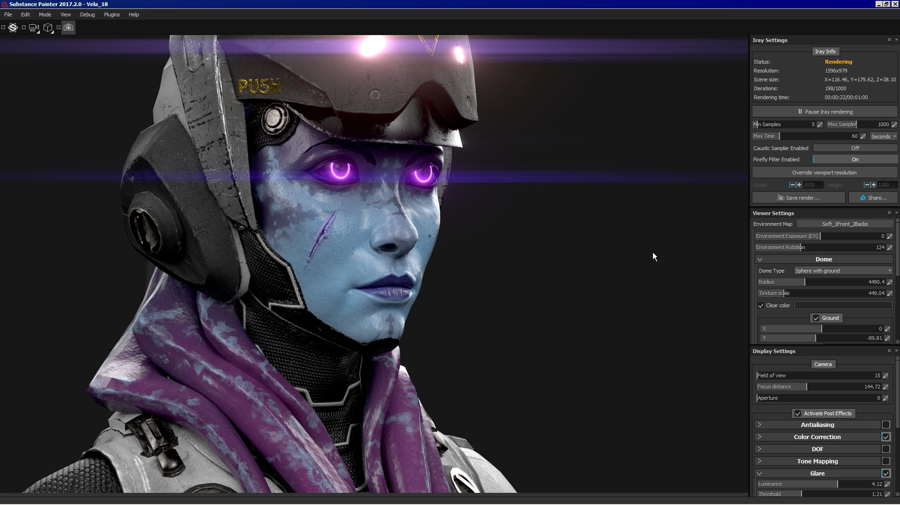
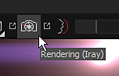
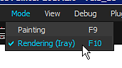

Iray is a GPU accelerated path-traced renderer developed by Nvidia .
With Iray it is possible to create image with a great accuracy of lighting in the scene and in high-definition (large resolution).
In order to start Iray, the mode of Substance 3D Painter has to be changed.
This can be done by pressing in various ways :


Iray use a specific set of parameters but also common properties shared by the regular viewport of Substance 3D Painter.
The Display settings let you control the camera and post effects settings.
They are identical to the regular viewport rendering, therefor they allow to be in sync and avoid unwanted lighting differences.
For more details, see the dedicated page: Display settings